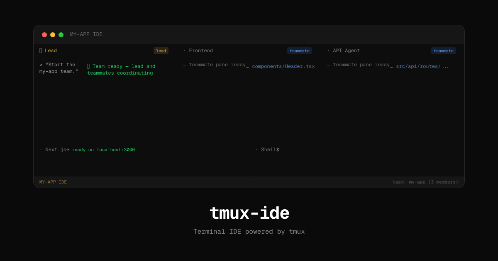
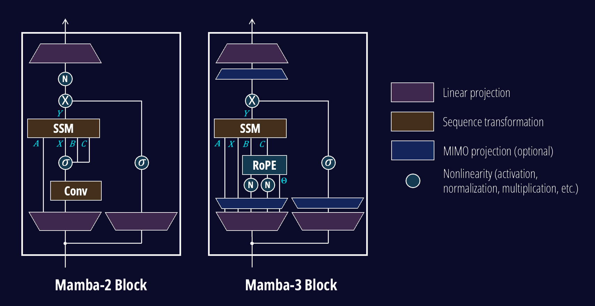

THE FRONT PAGE
EDITOR'S NOTE: The moment an idealist’s mission statement becomes a prospectus, we learn—again—that even the most disruptive tools eventually bend to the oldest incentives. #the institutionalization of AI as a financial instrument, not a paradigm shift
By migrating autonomous reasoning into the BEAM, this project treats agent state as a long-running process rather than a fragile script execution. The tradeoff is the inherent overhead of Erlang's actor model, which may be overkill for simple tasks but offers a rare path back to reliable software engineering in an era of flaky prompts.

The decision to shutter Horizon Worlds marks a pivot from speculative social engineering toward more efficient compute allocation, though it leaves early adopters of the proprietary stack with little but a lesson in platform volatility. Sustaining a high-fidelity metaverse requires a level of engineering discipline and infrastructure investment that currently conflicts with leaner fiscal targets.
Verígrafo stitches together Spain’s entire corpus of official documents into a versioned knowledge graph—useful for auditors, historians, and anyone tracking how policy actually evolves. The tradeoff? Maintaining temporal coherence at this scale still requires manual oversight for edge cases.
Nightingale attempts to commoditize real-time vocal extraction for local libraries, trading the convenience of cloud-based APIs for the unpredictable hardware overhead of on-device inference. It suggests a niche return to self-hosted utility, provided the underlying models don't collapse under the weight of complex arrangements.
Google’s new agentic reviewer attempts to patch the Linux kernel with the precision of Japanese needlework, though it risks trading deep architectural intuition for a high-volume churn of technically correct but spiritually hollow diffs.

Tmux-IDE attempts to reclaim the command line for agentic workflows, trading the visual safety of modern editors for a faster, lower-abstraction interface. It assumes developers still value granular control over the 'black box' automation of larger, proprietary AI suites.
MODEL RELEASE HISTORY
No confirmed model releases were detected for this edition date.

The third iteration of the state-space model architecture aims to dismantle the Transformer's monopoly on long-context processing, though developers must weigh its impressive inference speed against the risk of subtle state-decay in reasoning tasks.